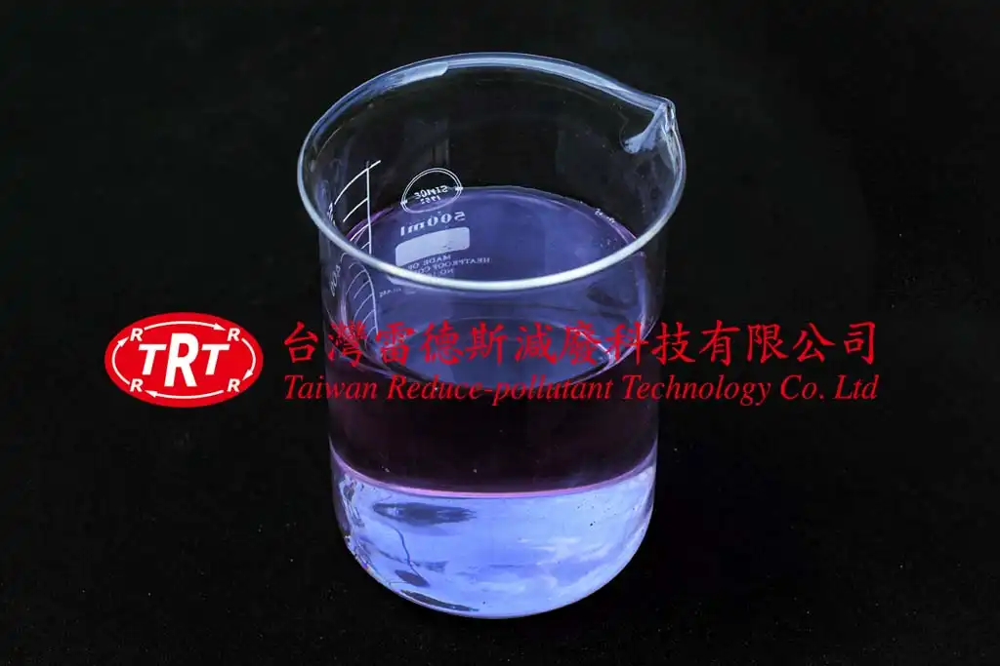
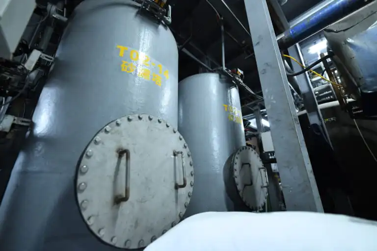

因應各項環保法規及放流水標準，開發高效工業廢水處理藥劑/藥品與穩固耐用之處理設備，廣泛得到客戶青睞肯定與長期配合。
專精振動研磨廢水處理・化學鎳工業製程高濃度廢液處理

台灣雷德斯減廢科技有限公司提供客製化廢水處理藥劑服務，跨領域的技術整合（如：搭配電化學、UF膜、UV光學、真空濃縮、離子交換樹脂），可提供客戶優質且節省成本的藥劑規劃方案，尤其是在振動研磨廢水、化學鎳、鉻酸純化等各工業製程領域取得卓越成績，除確保廢水處理效果達到排放標準且符合法規外，若輔以業主的配合，可成功轉為資源化再利用，協助客戶節省數百萬元。
深入了解 →
雷德斯TRT有超過35年豐富的工業製程廢水廢液處理經驗，開發出佔地小、具高效率高效能的廢水系統處理設備，能夠應對各種不同類型的廢水處理問題，根據客戶的需求提供全方位的解決方案，以確保最佳處理效果，又因講究細節，實際設備可連續運轉長達數十年，為客戶提升整體產能，獲得高度評價。
深入了解 →我們的核心價值在於根據客戶的需求和特定的環境條件，提供高品質定制化的解決方案，以實現環境保護和客戶滿意度的雙贏局面。
透過分析測試精確確定廢水的特性，掌控濃度波動影響，在前置處理時也加高效，提升了後段處理效率，大幅減少成本。
探索污染物質彼此之間交互作用的可能性，在適當的時機混合以達到部分污染低濃、減少廢物產生，降低處理的費用。
將原本的污染物返回成為原物料，不僅減少污染和廢棄物產生，還可以從經濟效益上創造價值，實現環保和經濟的雙贏。
歡迎直接來電，或填寫下方表單，我們的環保工程師將盡快與您聯繫。